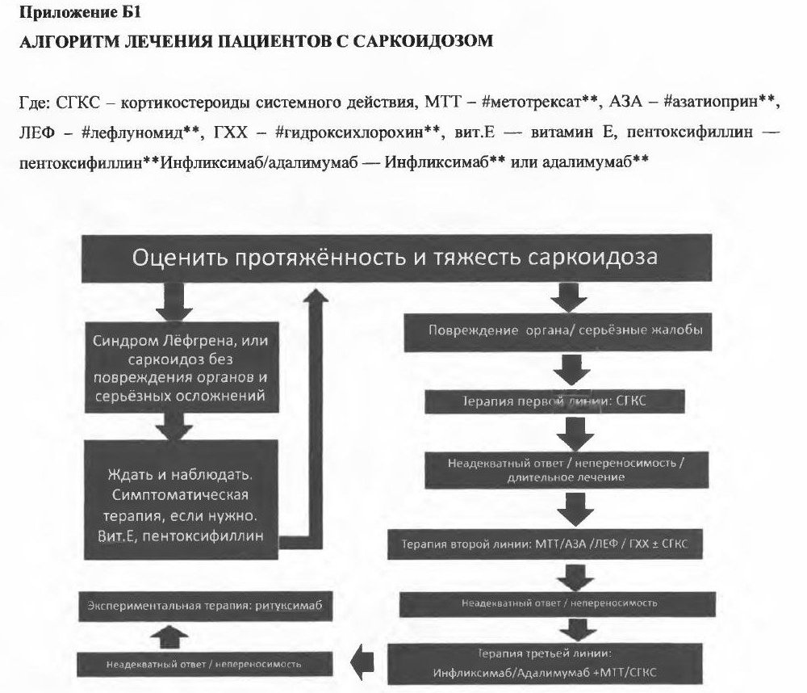

Сверка с PDF рубрикатора выполняется…
Саркоидоз
Клинические рекомендации от 26.12.2025 · взрослые и дети
Основные положения
- Саркоидоз является системным воспалительным заболеванием неизвестной этиологии, при котором образуются неказеифицирующиеся гранулёмы, поражаются многие органы и активируются Т-клетки в очагах воспаления.
- Саркоидоз ЛОР-органов и полости рта составляет менее 1% случаев. Формы поражения:
- синоназальная: заложенность носа, корки, носовые кровотечения, узелки на перегородке и верхней раковине;
- увеличение нёбных миндалин;
- поражение гортани с риском обструкции;
- сенсоневральная или кондуктивная тугоухость.
- Синдром Хеерфордта — Вальденстрёма: увеличение околоушных слюнных желёз, передний увеит, лихорадка, иногда паралич лицевого нерва.
- Диагноз верифицируется морфологически: гранулёмы без казеозного некроза хотя бы в одном органе при характерной клинико-рентгенологической картине; синдромы Лёфгрена, Хеерфордта, ознобленная волчанка позволяют установить предположительный диагноз без биопсии.
- Бессимптомным пациентам без недостаточности органов показано активное наблюдение с оценкой через 3 месяца; системные глюкокортикоиды показаны при прогрессировании, угрозе функции органа или жизни.
Клиническая картина и классификация
Определения
Саркоидоз является системным воспалительным заболеванием неизвестной этиологии, характеризующимся образованием неказеифицирующихся гранулём, мультисистемным поражением различных органов и активацией Т-клеток в месте гранулёматозного воспаления с высвобождением различных хемокинов и цитокинов.
Синдром Лёфгрена является вариантом острого течения саркоидоза, проявляющимся внутригрудной лимфаденопатией, узловатой эритемой, суставным синдромом и лихорадкой.
Синдром Хеерфордта — Вальденстрёма является вариантом острого течения саркоидоза, проявляющимся увеитом, паротитом, лихорадкой и в ряде случаев сопровождающимся параличом лицевого нерва (паралич Белла).
Саркоидная реакция представляет собой образование локализованных групп эпителиоидно-клеточных неказеифицирующихся гранулём саркоидного типа в ответ на экзогенные факторы (импланты, татуировки, филлеры), при применении интерферонов, перифокально при злокачественных опухолях и паразитарных заболеваниях; в отличие от саркоидоза поражение только локальное.
Этиология и эпидемиология
Решающую роль играет воздействие окружающей среды на генетически предрасположенный организм. Вероятными триггерами являются изменённые микобактерии, пропионовокислые бактерии, боррелии; саркоидная реакция возможна при применении интерферонов, индукторов интерфероногенеза и таргетной биологической терапии.
Саркоидоз встречается во всех возрастах и у обоих полов; в России преобладают женщины молодого и зрелого возраста. Синдром Лёфгрена наблюдается в 3,7–22% случаев, семейный саркоидоз в среднем в 9,5%.
Классификация
Классификация внутригрудного саркоидоза по данным лучевого обследования раздел 1.5 КР
| Стадия | Рентгенологическая картина | Частота |
|---|---|---|
| 0 | нет изменений на рентгенограмме органов грудной клетки | 5% |
| I | увеличение внутригрудных лимфатических узлов, паренхима лёгких не изменена | 45% |
| II | увеличение внутригрудных лимфатических узлов и изменения паренхимы лёгких | 30% |
| III | изменения паренхимы без увеличения внутригрудных лимфатических узлов | 15% |
| IV | выраженный фиброз лёгких как ведущий синдром | 5% |
Рентгенологическая стадия не отражает стадийность клинического течения; КТ точнее характеризует распространённость изменений. В диагнозе перечисляют все поражённые органы и системы.
- по локализации: классический, с преобладанием внутригрудных (лёгочных) поражений; с преобладанием внелёгочных поражений; генерализованный;
- по особенностям течения: с острым началом (синдромы Лёфгрена, Хеерфордта — Вальденстрёма), с изначально хроническим течением, с фиброзированием, рецидив, саркоидоз детей моложе 5 лет, саркоидоз, рефрактерный к лечению системными глюкокортикоидами.
Обострением называют реактивацию в течение года после окончания основного курса лечения, рецидивом считают возобновление проявлений через 1 год и более после лечения или спонтанной регрессии.
- ухудшение клиники, нарастание изменений в лёгких на КТ;
- появление или усиление внелёгочных проявлений;
- снижение ФЖЕЛ на 10% и более или DLco на 15% за 1 год;
- формирование лёгочной гипертензии;
- повышение АПФ, гиперкальциурия и (или) гиперкальциемия.
- локализация (поражённые органы), при внутригрудном саркоидозе рентгенологическая стадия 0–IV;
- активность: 0 (неактивный), 1 (активный) (или «синдром Лёфгрена», «синдром Хеерфордта — Вальденстрёма»);
- течение: стабильное, прогрессирующее, регрессирующее, волнообразное, обострение, рецидив;
- осложнения: недостаточность органа, стойкие структурные изменения;
- подтверждение диагноза на клеточном или тканевом уровне.
Клиническая картина
Чаще течение малосимптомное, хроническое. Наиболее выражены жалобы при синдроме Лёфгрена и при «увеопаротидной лихорадке» (синдроме Хеерфордта — Вальденстрёма).
Синдром Лёфгрена (как правило, не дольше 2 месяцев)- лихорадка;
- узловатая эритема;
- двусторонний периартрит, преимущественно голеностопных суставов;
- двусторонняя лимфаденопатия корней лёгких.
- слабость и утомляемость (30–80%), оцениваются по шкале FAS;
- лихорадка (20–60%) или длительный субфебрилитет;
- боль, тревога, депрессия, когнитивная дисфункция, нейропатия мелких волокон.
При поражении лёгких и внутригрудных лимфатических узлов возникают боль и дискомфорт в грудной клетке, одышка (оценивается по шкале mMRC), сухой кашель из-за давления увеличенных лимфатических узлов на бронхи или раздражения гранулёмами нервных окончаний.
Саркоидоз ЛОР-органов и полости рта
Саркоидоз ЛОР-органов и полости рта составляет менее 1% случаев саркоидоза; чаще всего это случайные находки.
Формы поражения- синоназальный саркоидоз проявляется неспецифическими симптомами: заложенностью носа, ринореей, корками на слизистой оболочке, носовыми кровотечениями, болью в носу, нарушением обоняния. Эндоскопически выявляется картина хронического риносинусита с узлами на перегородке и (или) в носовых раковинах, корками и мелкими саркоидозными узелками, чаще на перегородке и верхней носовой раковине. Диагноз требует гистологической верификации;
- саркоидоз нёбных миндалин может проявляться бессимптомным одно- или двусторонним увеличением миндалин; неказеифицирующиеся гранулёмы в их ткани выявляются после тонзиллэктомии;
- саркоидоз гортани приводит к дисфонии, дисфагии, кашлю. Обнаруживают отёк и эритему слизистой оболочки, узелки и узлы. Диагноз подтверждается биопсией. Возможна угрожающая жизни обструкция дыхательных путей;
- саркоидоз уха относится к особо редким локализациям и обычно сочетается с поражением других органов. Проявляется снижением слуха, шумом в ушах, глухотой, вестибулярными расстройствами; вызывает сенсоневральную тугоухость разной степени, реже — поражение среднего уха с кондуктивной тугоухостью;
- саркоидоз полости рта и языка встречается нечасто и проявляется опуханием и изъязвлением слизистой оболочки полости рта, языка, губ, дёсен. Орофарингеальный саркоидоз может быть причиной ночного обструктивного апноэ, в том числе как единственное проявление заболевания.
Саркоидоз слюнных желёз (6%) проявляется двусторонним опуханием околоушных желёз, в том числе в составе синдрома Хеерфордта — Вальденстрёма.
Дифференциальная диагностика- хронический сиалоаденит;
- туберкулёз;
- болезнь кошачьей царапины;
- актиномикоз;
- синдром Шегрена.
Поражение черепных нервов является самым частым проявлением нейросаркоидоза (50% случаев), чаще всего лицевого, затем зрительного нерва. Паралич лицевого нерва обычно проходит за несколько месяцев даже без лечения. Описаны потеря слуха (VIII нерв), лицевая боль и нарушения чувствительности (V нерв).
Ознобленная волчанка (lupus pernio) представляет собой хроническое рецидивирующее поражение кожи носа, щёк, ушных раковин и пальцев. Поражённые участки уплотнены; их цвет красный, пурпурный или фиолетовый. Часто сочетается с поражением лёгких, костей и глаз и резистентна к лечению.
Периферические лимфатические узлы поражаются в 10–25%, чаще задние и передние шейные и надключичные: плотноэластические, не размягчаются и не образуют свищей. Обнаружение эпителиоидно-клеточных гранулём в удалённом узле требует дифференциальной диагностики с саркоидной реакцией и другими гранулематозами.
Внелёгочные локализации
Кожа (10–30%): узлы, бляшки, «ожившие рубцы», гранулёмы в татуировках; узловатая эритема саркоидных гранулём не содержит. Глаза (5–25%): передний (70–75%) и задний увеит, которые требуют офтальмологического обследования. У детей до 5 лет характерна триада: увеит, поражение кожи, артрит без поражения лёгких.
Сердце (2–18%) является жизнеугрожающей локализацией: нарушения ритма и проводимости, внезапная смерть. Поражение нервной системы (5–10%) проявляется краниальными нейропатиями, асептическим менингитом, гипоталамо-гипофизарной дисфункцией. Возможно также поражение почек, печени, селезёнки, костей (кистоидный остеит фаланг), суставов.
Диагностика
Критерии диагноза
Диагноз устанавливается по жалобам, анамнезу, лучевым, функциональным, лабораторным и морфологическим данным и требует исключения саркоидной реакции и сходных заболеваний. Диагноз верифицируется выявлением гранулём без казеозного некроза хотя бы в одном органе при характерной клинико-рентгенологической картине.
Синдром Лёфгрена, синдром Хеерфордта, ознобленная волчанка и бессимптомная двусторонняя внутригрудная лимфаденопатия настолько специфичны, что позволяют установить предположительный диагноз без морфологического исследования.
Диагноз устанавливает и формулирует пульмонолог медицинской организации 2–3 уровня после обследования.
Физикальное обследование
- все пациенты: обследование всех органов и систем.
- изменения кожи, особенно в области старых рубцов и татуировок;
- безболезненные подвижные увеличенные периферические лимфатические узлы, подкожные саркоиды Дарье — Русси;
- увеит, эписклерит при осмотре конъюнктивы и радужки;
- увеличение печени и селезёнки.
Общий (клинический) анализ крови
- все пациенты.
- повышение СОЭ при остром течении;
- лимфопения и моноцитоз как признаки активности;
- тромбоцитопения при поражении печени, селезёнки, костного мозга.
Оценка функции почек
- все пациенты: при первичной диагностике и не реже 1 раза в 6 месяцев.
- общий анализ мочи;
- креатинин и мочевина крови;
- скорость клубочковой фильтрации (СКФ).
Активность ангиотензинпревращающего фермента
- подростки и взрослые: при выявлении и в динамике как маркер активности, но не как дифференциально-диагностический критерий.
- норма в 6–18 лет: 29–112 ед.;
- норма старше 18 лет: 20–70 ед.;
- клинически значимым является увеличение активности более 150% от верхней границы нормы.
С-реактивный белок
При остром саркоидозе определяют С-реактивный белок: его умеренное повышение характерно для синдрома Лёфгрена.
Кальций крови и суточной мочи
Кальций крови и суточной мочи исследуют при выявлении и в динамике: гиперкальциемия (5%) и гиперкальциурия (25%) являются признаками активного процесса.
Иммуноглобулины A, M, G
Иммуноглобулины A, M, G определяют при первичном обследовании для дифференциальной диагностики с иммунодефицитами, сопровождающимися гранулёмами (ОВИН).
Исключение туберкулёза
- детям до 7 лет на этапе первичной диагностики проводят пробу Манту с 2 ТЕ; у не получавших системные глюкокортикоиды при активном саркоидозе она отрицательна не менее чем в 80–85% случаев;
- всем пациентам при первичной диагностике обязательна проба с аллергеном туберкулёзным рекомбинантным (АТР);
- при отказе от кожных проб или невозможности их выполнения проводят IGRA-тесты;
- при положительном результате показано углублённое обследование у фтизиатра.
Рентгенография органов грудной полости
- все пациенты: первичная диагностика и определение стадии;
- динамическое наблюдение: только при невозможности КТ.
- симметричное увеличение лимфатических узлов корней лёгких и средостения;
- двусторонние очагово-интерстициальные изменения при относительно удовлетворительном состоянии.
Компьютерная томография органов грудной полости
- все пациенты: первичная диагностика и динамическое наблюдение.
- увеличенные лимфатические узлы центрального средостения и корней лёгких без перифокальной инфильтрации;
- перилимфатические мелкие очаги вдоль бронхососудистых пучков, междолевых щелей и плевры.
Другие методы визуализации
- МРТ сердца и (или) головного мозга: подозрение на саркоидоз сердца и центральной нервной системы;
- ПЭТ-КТ всего тела: уточнение локализации и выбор места биопсии (накопление ФДГ не отличает саркоидоз от опухоли или инфекции).
- УЗИ брюшной полости;
- МРТ головного мозга и сердца;
- эхокардиография;
- рентгенография и МРТ поражённых костей и мягких тканей.
Исследование функции внешнего дыхания
- все пациенты при первичной диагностике вне зависимости от локализации;
- активная фаза: не реже 1 раза в 3 месяца;
- динамическое наблюдение: ежегодно.
- спирометрия (ФЖЕЛ, ОФВ1/ФЖЕЛ);
- диффузионная способность лёгких (DLco) в пульмонологических центрах;
- пульсоксиметрия на всех этапах, при необходимости тест с 6-минутной ходьбой.
Электрокардиография
ЭКГ является обязательным компонентом первичного обследования; при нарушениях ритма показано холтеровское мониторирование.
Биопсия
- все пациенты на этапе первичной диагностики: бронхоскопия с биопсией.
- прямая;
- чрезбронхиальная;
- тонкоигольная биопсия лимфатических узлов;
- криобиопсия.
Всем пациентам обязательно исключение туберкулёза в биоптатах и промывных водах бронхов: микроскопия, посев, ПЦР.
При неинформативности эндоскопической биопсии выполняются миниинвазивные хирургические вмешательства: видеоторакоскопическая резекция лёгкого, биопсия внутригрудных лимфатических узлов.
При внелёгочном саркоидозе выполняется биопсия поражённого органа: периферического лимфатического узла, кожи, подкожных образований, печени. Метод выбирают лечащий врач и хирург.
Дифференциальная диагностика
- внутригрудная лимфаденопатия: туберкулёз, нетуберкулёзный микобактериоз, бруцеллёз, токсоплазмоз, болезнь Кикучи, болезнь кошачьей царапины, саркоидная реакция при карциноме, лимфомы, острый лимфобластный лейкоз, GLUS-синдром, IgG4-ассоциированное заболевание, ОВИН;
- диссеминация в лёгких: туберкулёз, микозы, опухолевая диссеминация, гиперчувствительный пневмонит, пневмокониозы, лекарственные реакции, гистиоцитоз X, гранулематоз с полиангиитом (Вегенера), интерстициальные пневмонии, ОВИН;
- дети до 5 лет: увеиты, паротиты, артриты и поражения кожи другой этиологии.
Лечение
Этиотропной терапии нет. Активная терапия показана при угрозе недостаточности органов, угрозе жизни или потере качества жизни; в остальных случаях проводится активное наблюдение. Необходимость лечения соотносят с тяжестью последствий глюкокортикоидной, цитостатической или биологической терапии.
Активное наблюдение
Бессимптомным пациентам (детям и взрослым) без недостаточности органов показано активное наблюдение с оценкой через 3 месяца, поскольку частота спонтанных ремиссий высока.
Взрослым с бессимптомным течением без функциональных нарушений в качестве альтернативы возможно назначение альфа-токоферола ацетатаoff-label или его сочетания с пентоксифиллиномoff-label на срок не менее 6 месяцев. Дозы в тексте рекомендации противоречивы (мкг и мг); варианты приведены в «Подробнее».
- альфа-токоферолаoff-label ацетат: в разделе 3.1 указано «200 мкг 2 раза в сутки» и, ниже, «200–400 мг в сутки»;
- пентоксифиллинoff-label: в разделе 3.1 указано «400–2000 мкг в сутки» и, ниже, 600–1200 мг в сутки (при стероидзамещающей терапии до 2000 мг).
Системные глюкокортикоиды
СГКС являются препаратами первой линии при прогрессирующем течении болезни, но только при выраженных симптомах или внелёгочных проявлениях, нарушающих функцию органа, при развитии lupus pernio, угрозе жизни или резком снижении качества жизни. Риск нежелательных явлений высокий.
- преднизолон, взрослым: внутрь утром 20–40 мг в сутки (0,5 мг/кг) 4 недели, затем снижение по 5 мг в месяц до минимальной поддерживающей дозы; общая длительность приёма 12–24 месяца.
Эффект оценивают через 3 месяца, при его отсутствии переходят на альтернативную терапию. Препараты СГКС следует применять не менее 10–12 месяцев. После отмены обострения развиваются у 30–80%. О полной ремиссии судят через 3 года после прекращения терапии.
При отсутствии эффекта через 3–6 месяцев и при прогрессировании следует пересмотреть диагноз и исключить инфекционную, прежде всего туберкулёзную, природу изменений. При рецидиве после полноценного курса СГКС показаны препараты второй линии, предпочтительно метотрексат.
Нежелательные явления: повышение артериального давления и уровня глюкозы крови, увеличение массы тела, остеопороз (лечение бисфосфонатами), надпочечниковая недостаточность.
Ингаляционные глюкокортикоиды
- саркоидоз гортани;
- выраженный кашель.
В качестве основной терапии саркоидоза ингаляционные глюкокортикоиды не рекомендуются. Комбинации с бронхолитиками применяют только при доказанной обратимой бронхообструкции.
Препараты второй и третьей линии
Метотрексатoff-label применяют как препарат второй линии (при рефрактерности к СГКС, побочных реакциях или для снижения их дозы) и как препарат первой линии в монотерапии или в комбинации с СГКС при верифицированном саркоидозе. Обладает тератогенностью, противопоказан при беременности.
- метотрексатoff-label: внутрь 10–15 мг 1 раз в неделю; взрослым при нейро- и кардиосаркоидозе до 25 мг в неделю;
- фолиевая кислотаoff-label: 5 мг 1 раз в неделю или 1 мг ежедневно, не ранее чем через 24 часа после метотрексата; терапия от 6 месяцев.
До лечения определяют АЛТ, АСТ, креатинин, общий анализ крови; в ходе лечения исследования повторяют каждые 1–3 месяца.
Другие препараты второй линии
| Препарат | Режим дозирования | Возрастные ограничения | Нежелательные явления и противопоказания |
|---|---|---|---|
| Азатиопринoff-label | 100–200 мг в сутки, не менее 6 месяцев | с 3 лет | гепатотоксичность, лейкопения, инфекции, повышение риска лимфомы и лейкемии |
| Лефлуномидoff-label | 10–20 мг в сутки; эффект не ранее чем через 3 месяца | с 18 лет | тератогенен, противопоказан при беременности; общий и биохимический анализ крови до лечения и каждые 1–3 месяца |
| Микофенолата мофетилoff-label | 500 мг 2 раза в день с увеличением до 750–1000 мг 2 раза в день | с 12 лет (площадь поверхности тела 1,25 м²) | у каждого пятого пациента тошнота, диарея, лейкопения, повышение риска инфекций; регулярный общий анализ крови |
| Циклофосфамидoff-label | 500–1000 мг внутривенно каждые 3–4 недели при полиорганном поражении и рефрактерности | дети и взрослые | чаще других иммунодепрессантов вызывает инфекционные осложнения |
| Гидроксихлорохинoff-label | 400 мг с возможным снижением до 200 мг в сутки, 6–12 месяцев | с 6 лет | не рекомендуется при саркоидозе глаз (ретинопатия); удлиняет интервал QT, необходим регулярный ЭКГ-контроль; противопоказан при беременности |
Ингибиторы ФНО-альфа применяют в третьей линии только при рефрактерном саркоидозе в профильных центрах.
- инфликсимабoff-label: 3 или 5 мг/кг внутривенно на 0-й, 2-й и 6-й неделе, затем каждые 4–8 недель;
- адалимумабoff-label: 40 мг в неделю.
НПВП применяют симптоматически при острых формах и артритах с выраженным болевым синдромом, по инструкции.
Антифибротическая терапия показана только взрослым при прогрессирующем фиброзе, несмотря на лечение глюкокортикоидами и препаратами второй линии.
Другие методы лечения
При хроническом рефрактерном саркоидозе применяют плазмаферез (3–4 процедуры с недельным перерывом) или экстракорпоральную модификацию лимфоцитов.
Трансплантация лёгких показана при терминальной стадии (IV, фиброз), сердца при кардиосаркоидозе с рефрактерными нарушениями ритма, печени при её тяжёлом поражении.
При дыхательной недостаточности применяют низкопоточную оксигенотерапию, в тяжёлых случаях неинвазивную ИВЛ до SpO₂ более 90%; лечение лёгочной гипертензии проводится по рекомендациям по лёгочной артериальной гипертензии.
- повышение физической активности;
- физическая и психологическая реабилитация;
- группы поддержки;
- лечение боли и нарушений сна.
Разгрузочно-диетическая терапия рекомендована пациентам на ранних стадиях саркоидоза при наличии ожирения.
- лечебный режим;
- диетотерапия;
- физическая реабилитация (активная и пассивная);
- респираторная физиотерапия;
- психодиагностика и психокоррекция.
Утверждённой программы медицинской реабилитации при саркоидозе не разработано.
Скрыто: дозы альфа-токоферола и пентоксифиллина, нежелательные явления СГКС, антифибротическая терапия, эфферентные методы, трансплантация, разгрузочно-диетическая терапия, компоненты реабилитации.
Алгоритм действий врача

Профилактика и диспансерное наблюдение. Показания к госпитализации
Показания к госпитализации
- плановая госпитализация: первичная комплексная, в том числе инвазивная, диагностика и подбор начальной терапии;
- экстренная госпитализация: острый прогрессирующий саркоидоз с осложнениями (дыхательная недостаточность, нарушения ритма).
В большинстве случаев лечение проводится амбулаторно.
- завершение диагностики и установление клинического диагноза;
- назначение лечения;
- компенсация острого состояния и осложнений, ставших причиной госпитализации.
Диспансерное наблюдение
Наблюдение пожизненное: при торакальных формах его осуществляет пульмонолог, при генерализованных и внеторакальных пульмонолог и специалист по соответствующей локализации.
Частота осмотров- впервые выявленный саркоидоз в первый год болезни и при сохранении активности процесса: каждые 3 месяца;
- при стабилизации процесса на 2-м году: каждые 6 месяцев, в последующие годы — ежегодно;
- при рецидивах: каждые 3 месяца в течение 2 лет, в последующие годы при стабилизации — ежегодно;
- при прогрессирующем течении: каждые 3 месяца в течение 2 лет, затем при стабилизации процесса каждые 6 месяцев в течение 2 лет, затем ежегодно.
Пациенты с саркоидозом относятся к иммунокомпрометированным; вакцинация проводится по национальному календарю и календарю по эпидемическим показаниям с учётом периода болезни и терапии.
Коды МКБ-10
Источник и актуальность
Журнал сверки
Неточности и противоречия в тексте рекомендации
- Дозы альфа-токоферолаoff-label ацетата и пентоксифиллинаoff-label в разделе 3.1 указаны в микрограммах («200 мкг 2 раза в сутки», «400–2000 мкг»), а ниже в том же разделе — в миллиграммах («200–400 мг в сутки», «600 мг в сутки», «до 2000 мг»); различие в тысячу раз.